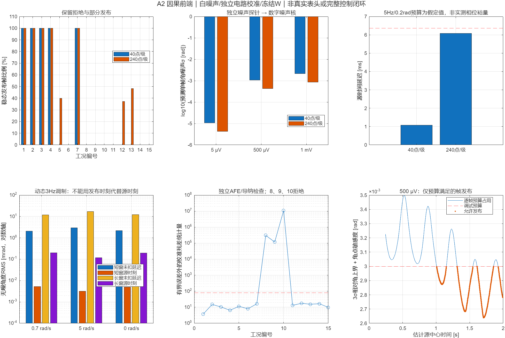
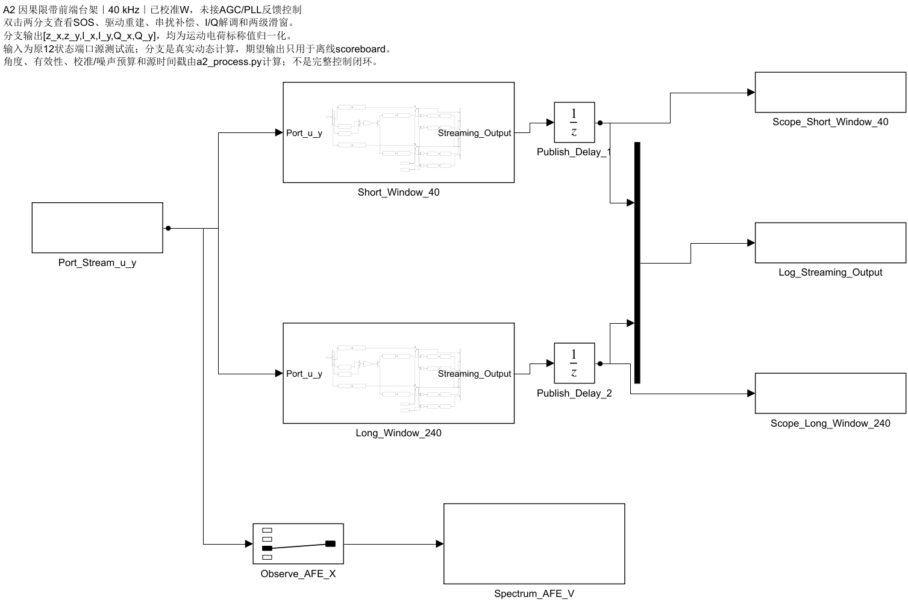
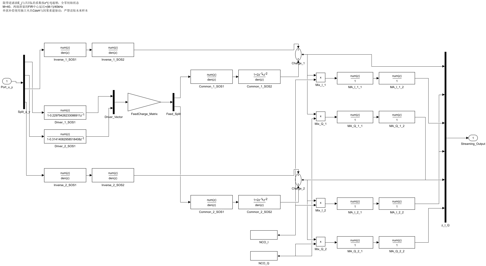

15种合成流，两种窗口；白噪声为AFE采样电压每通道时域RMS。主结果：5 μV可发布，500 μV短窗拒绝、长窗约37%–48%稳态帧满足保守预算；1 mV仍拒绝。长窗不是全帧通过。
三种校准失配/额外极点、低幅工况均拒绝。噪声探针与流噪声独立，处理器不读取运动真值。W沿用A1无噪标定，串扰矩阵依赖独立夹持夹具。
旧代码max_frame_age检查“当前时刻−发布时间”，不代表信号源延迟；本次分别列FIR起点/中心、源中心、样本末点和下一拍发布时间。源中心为窄带群延迟估计，IIR没有有限硬起点。



原生Discrete Filter、乘法器、两级滑窗和Unit Delay执行实际算法；From Workspace只输入u/y，不输入期望输出。两种窗口8192样本、12输出逐点最大差7.5995e-14。角度和质量门控在Python处理器执行，尚未进入控制反馈。
| 工况 | 每级窗口 | 类型 | 时域噪声RMS [V] | 稳态发布率 | 源延迟 [ms] | 全部稳态帧角误差RMS [rad] | 已发布帧RMS [rad] | 预期检查 |
|---|---|---|---|---|---|---|---|---|
| case_001 | 40 | nominal | 0 | 100.00% | 1.0775 | 5.2212e-06 | 5.2212e-06 | 匹配 |
| case_002 | 40 | nominal | 0 | 100.00% | 1.0775 | 3.2121e-06 | 3.2121e-06 | 匹配 |
| case_003 | 40 | nominal | 0 | 100.00% | 1.0775 | 5.025e-06 | 5.025e-06 | 匹配 |
| case_004 | 40 | nominal | 5e-06 | 100.00% | 1.0775 | 1.7826e-05 | 1.7826e-05 | 匹配 |
| case_005 | 40 | nominal | 0.0005 | 0.00% | 1.0775 | 0.0017044 | — | 匹配 |
| case_006 | 40 | nominal | 0.001 | 0.00% | 1.0775 | 0.0028529 | — | 匹配 |
| case_007 | 40 | bounded | 5e-06 | 100.00% | 1.0775 | 0.00010351 | 0.00010351 | 匹配 |
| case_008 | 40 | bad_afe | 5e-06 | 0.00% | 1.0775 | 0.0092364 | — | 匹配 |
| case_009 | 40 | bad_Cs | 5e-06 | 0.00% | 1.0775 | 0.00033561 | — | 匹配 |
| case_010 | 40 | extra_pole | 5e-06 | 0.00% | 1.0775 | 0.00078132 | — | 匹配 |
| case_011 | 40 | nominal | 5e-06 | 0.00% | 1.0775 | 0.13438 | — | 匹配 |
| case_012 | 40 | nominal | 0.0005 | 0.00% | 1.0775 | 0.0015933 | — | 匹配 |
| case_013 | 40 | nominal | 0.0005 | 0.00% | 1.0775 | 0.0018022 | — | 匹配 |
| case_014 | 40 | nominal | 0.001 | 0.00% | 1.0775 | 0.003238 | — | 匹配 |
| case_015 | 40 | nominal | 0.001 | 0.00% | 1.0775 | 0.0038923 | — | 匹配 |
| case_001 | 240 | nominal | 0 | 100.00% | 6.0775 | 0.00019785 | 0.00019785 | 匹配 |
| case_002 | 240 | nominal | 0 | 100.00% | 6.0775 | 0.00011682 | 0.00011682 | 匹配 |
| case_003 | 240 | nominal | 0 | 100.00% | 6.0775 | 0.00019284 | 0.00019284 | 匹配 |
| case_004 | 240 | nominal | 5e-06 | 100.00% | 6.0775 | 0.00019159 | 0.00019159 | 匹配 |
| case_005 | 240 | nominal | 0.0005 | 39.94% | 6.0775 | 0.0011265 | 0.0010786 | 匹配 |
| case_006 | 240 | nominal | 0.001 | 0.00% | 6.0775 | 0.0015059 | — | 匹配 |
| case_007 | 240 | bounded | 5e-06 | 100.00% | 6.0775 | 0.00018183 | 0.00018183 | 匹配 |
| case_008 | 240 | bad_afe | 5e-06 | 0.00% | 6.0775 | 0.0092239 | — | 匹配 |
| case_009 | 240 | bad_Cs | 5e-06 | 0.00% | 6.0775 | 0.0003754 | — | 匹配 |
| case_010 | 240 | extra_pole | 5e-06 | 0.00% | 6.0775 | 0.00087171 | — | 匹配 |
| case_011 | 240 | nominal | 5e-06 | 0.00% | 6.0775 | 0.046698 | — | 匹配 |
| case_012 | 240 | nominal | 0.0005 | 37.26% | 6.0775 | 0.0004215 | 0.00033683 | 匹配 |
| case_013 | 240 | nominal | 0.0005 | 48.17% | 6.0775 | 0.00045741 | 0.00037026 | 匹配 |
| case_014 | 240 | nominal | 0.001 | 0.00% | 6.0775 | 0.0022624 | — | 匹配 |
| case_015 | 240 | nominal | 0.001 | 0.00% | 6.0775 | 0.0014988 | — | 匹配 |
评分从预先声明的0.25 s预热后开始。相对角以首个参考帧定义增量；不拟合真值偏置或延迟。参考帧到达前，相对角和相对噪声预算为NaN。拒绝帧不发布角，但仍列全部稳态候选误差，避免只展示好帧。
角点敏感度为窄带探索，非严格区间保证；3σ门控含首参考帧噪声的保守上界，非全程失效概率认证。高斯仪器残差检查的概率含义仅在独立噪声、正确σ及参数界成立时有效。
原机械模型静止、运动由外部强制模态方向轨迹产生；所列0/0.7/5 rad/s不是已验证的机体角速度。未验证ADC/DAC量化、抖动、饱和、有色噪声、未知W漂移、硬件定点及全闭环稳定性。
trials保留首轮短窗结果快照和输入源配置失败记录；首轮结果缺少当时完整源码快照，不作为独立重放证明。正式交付的源码、数据、模型和结果由manifest封存。